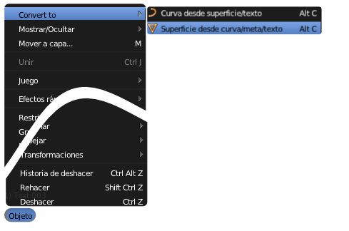

Texto a malla
En realidad un texto es una información obtenida del archivo de la tipografía. Es vectorial, escalable y se integra perfectamente en el diseño 3D; pero esto tiene su ventaja y su inconveniente:
- Ventaja. Podemos editar el texto siempre que queramos (borrar, añadir una coma...).
- Inconveniente. Al arrancar Blender éste se va a la carpeta de fuentes a buscar la información sobre la tipografía. ¿Qué pasa se traslada el .blend a un ordenador donde no está la tipografía instalada? Pues que Blender la sustituye por Bfont, la fuente por defecto que está dentro del propio programa. Eso ocurre también si la fuente cambia de directorio, si le cambiamos el nombre...
Para poner solución a ese inconveniente debemos convertir el objeto de texto en una malla, con sus vértices, lados y caras. Hay que estar en Modo Objeto y seguir el menú Objeto/Convert to/Superficie desde curva-meta-texto.

Ahora la apariencia del texto en Modo edición  esta otra.
esta otra.
Todo parece correcto pero esa malla a quedado repleta de puntos dobles en los bordes. Así que seleccionamos todos los vértices "A" y nos deshacemos de ellos (Malla/Vértices/Eliminar dobles).